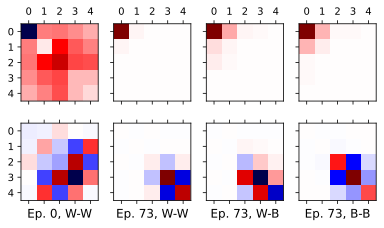
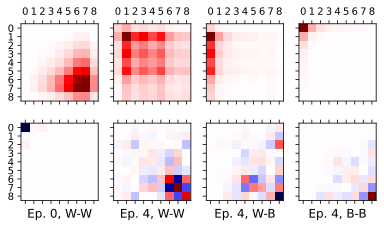
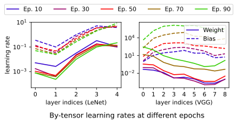

Gathering and Exploiting Higher-Order Information when Training Large Structured Models
ECML PKDD 2025
Publisher · arXiv · PDF · Code
First arXiv version (2023) titled “Adapting Newton’s Method to Neural Networks through a Summary of Higher-Order Derivatives”.
In short. For neural networks, second-order methods usually avoid the Hessian and rely on first-order surrogates (quasi-Newton methods, K‑FAC). Instead, we split the parameters into a few groups (e.g., one per layer) and compute exactly a small summary of the Hessian and of the third derivative of the loss along the descent direction, whose size depends only on the number of groups. This summary gives one learning rate per group at each step: it accounts for the interactions between all layers, including distant ones, and makes the training trajectory invariant to affine reparameterizations of each layer.
Main contributions
- Higher-order derivatives “according to a partition”. Given a partition of the P parameters into S groups and a direction u, we compute exactly a tensor with Sd entries that summarizes the derivative of order d of the loss in the direction u, at a cost of order Sd−1 P (against P for a gradient). This remains tractable for large models as long as S is small.
- One learning rate per group. At order 2, the summary is an S × S matrix. Solving an S × S linear system gives the learning rates that minimize the second-order Taylor expansion of the loss along u; they can also be used for hyperparameter tuning.
- A Newton-like method regularized at order 3. The diagonal of the order-3 summary sets an anisotropic cubic regularization, in the spirit of Nesterov’s, which keeps the step under control even when the order-2 summary is not positive definite. Without regularization, the method reduces to Newton’s method when each parameter forms its own group, and to Cauchy’s steepest descent when all parameters form a single group.
- Long-range interactions and invariance. The S × S matrix is dense, so the step accounts for the interactions between all groups, including distant layers, unlike block-diagonal approximations such as K‑FAC. The training trajectory is invariant under any affine reparameterization of each group, as long as the direction is the gradient or a momentum.
Figures





Abstract
When training large models, such as neural networks, the full derivatives of order 2 and beyond are usually inaccessible, due to their computational cost. Therefore, among the second-order optimization methods, it is common to bypass the computation of the Hessian by using first-order information, such as the gradient of the parameters (e.g., quasi-Newton methods) or the activations (e.g., K-FAC). In this paper, we focus on the exact and explicit computation of projections of the Hessian and higher-order derivatives on well-chosen subspaces relevant for optimization. Namely, for a given partition of the set of parameters, we compute tensors that can be seen as "higher-order derivatives according to the partition", at a reasonable cost as long as the number of subsets of the partition remains small. Then, we give some examples of how these tensors can be used. First, we show how to compute a learning rate per subset of parameters, which can be used for hyperparameter tuning. Second, we show how to use these tensors at order 2 to construct an optimization method that uses information contained in the Hessian. Third, we show how to use these tensors at order 3 (information contained in the third derivative of the loss) to regularize this optimization method. The resulting training step has several interesting properties, including: it takes into account longrange interactions between the layers of the trained neural network, which is usually not the case in similar methods (e.g., K-FAC); the trajectory of the optimization is invariant under affine layer-wise reparameterization. Our code is available on GitHub: https://github.com/p-wol/GroupedNewton.
Resources
- Code (PyTorch package
grnewt): github.com/p-wol/GroupedNewton - Tutorial notebook: Example01_basic.ipynb
- Open-access version: ECML PKDD 2025 preprint
- Slides: PDF (ECML PKDD 2025)
- Poster: PDF (ECML PKDD 2025)
How to cite
P. Wolinski. Gathering and Exploiting Higher-Order Information when Training Large Structured Models. In Machine Learning and Knowledge Discovery in Databases. Research Track (ECML PKDD 2025), pages 436–452. Springer, 2025.
@inproceedings{wolinski2025gathering,
title = {Gathering and Exploiting Higher-Order Information when Training Large Structured Models},
author = {Wolinski, Pierre},
year = {2025},
booktitle = {Machine Learning and Knowledge Discovery in Databases. Research Track (ECML PKDD 2025)},
pages = {436--452},
publisher = {Springer},
doi = {10.1007/978-3-032-06078-5_25}
}